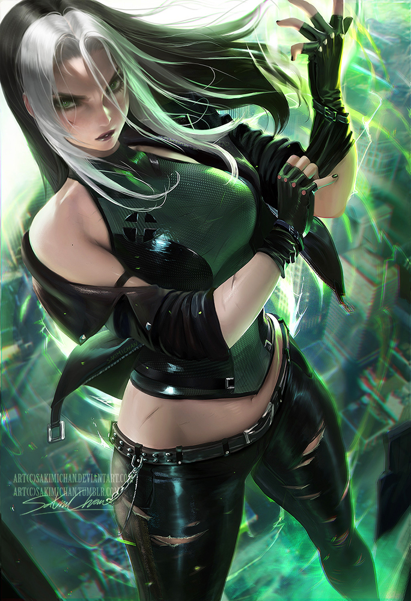
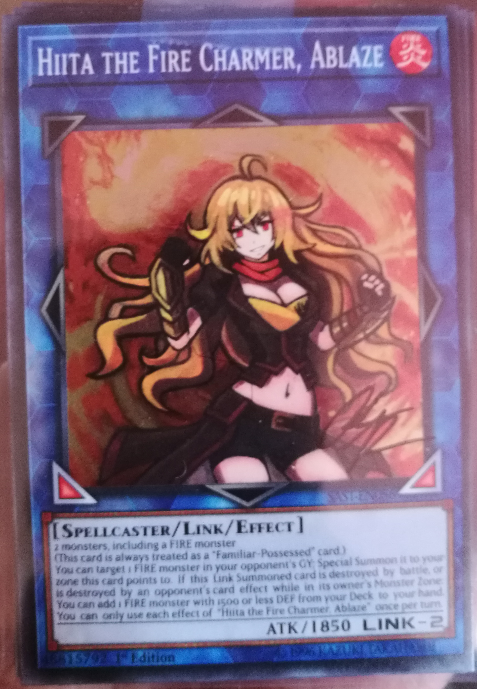
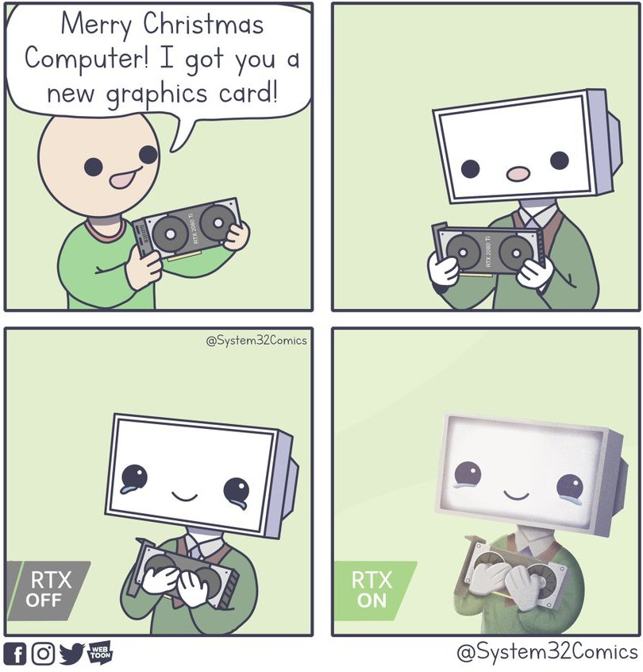

WLOP (real name Wang Ling) is a hobbyist digital artist.
Known for their high quality fantasy themed paintings.
Ilya Kuvshinov is a Russian illustrator who created the character designs for The Wonderland (2019) and Ghost in the Shell: SAC 2045 (2020). He was born in Russia, where he worked in the video game industry and character design on the side.
Kuvshinov moved to Japan around 2015 to work full-time on anime.
Eunnieverse is a Korean-American artist and writer who creates comics.
Is usually known for his "dumb" comics.
Sakimichan is the pen-name of Yue Wang, a Canadian artist known for her digital paintings, particularly fanarts of popular fictional characters, and creates voice-over tutorials for her patreon subscribers.
Amanda Lapalme is a freelance artist who creates art on her Twitch channel and has her own merchandise website and has employed a team that she collaborates with to help create and manage the merchandise on the website.
Lastly is Systems32comics is an artist who creates tech based comics and will range from computer to printers to even coding comics.
